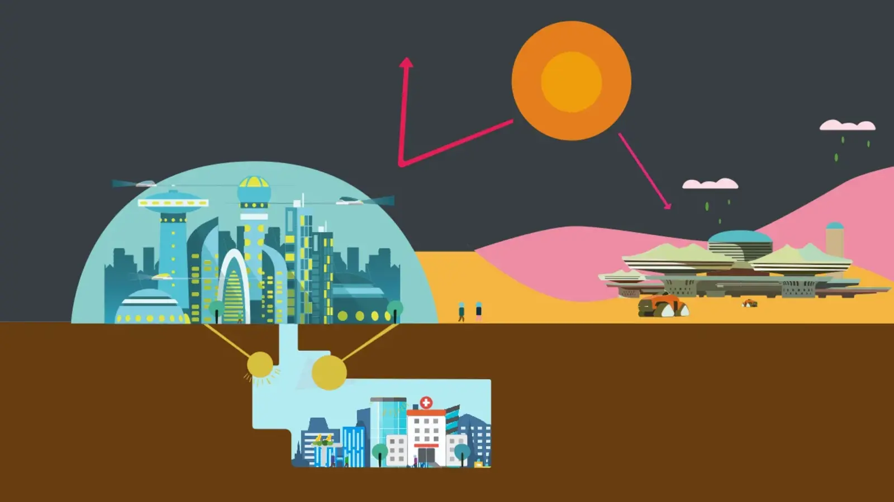
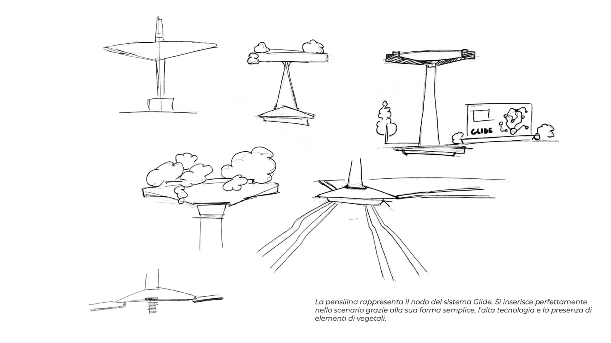
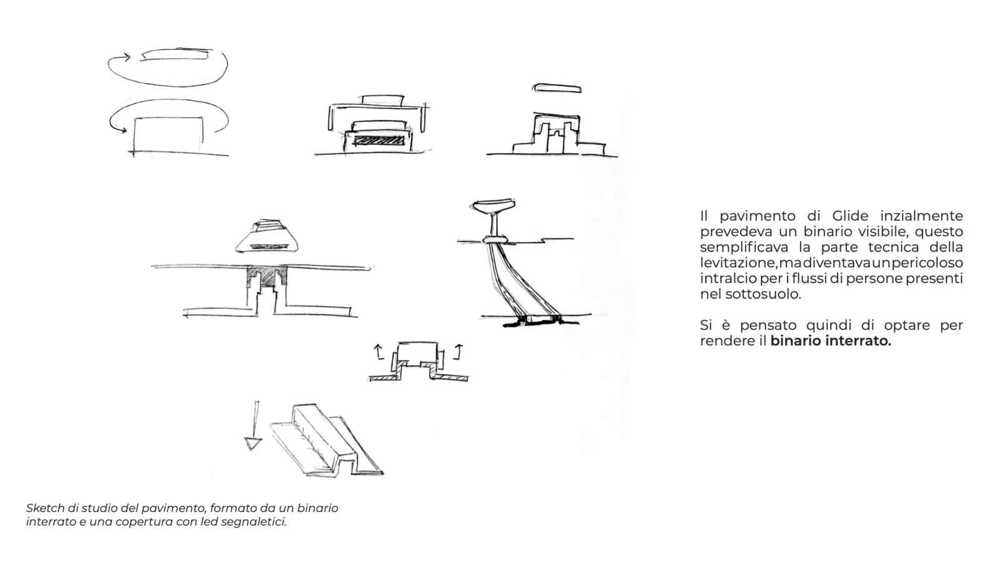
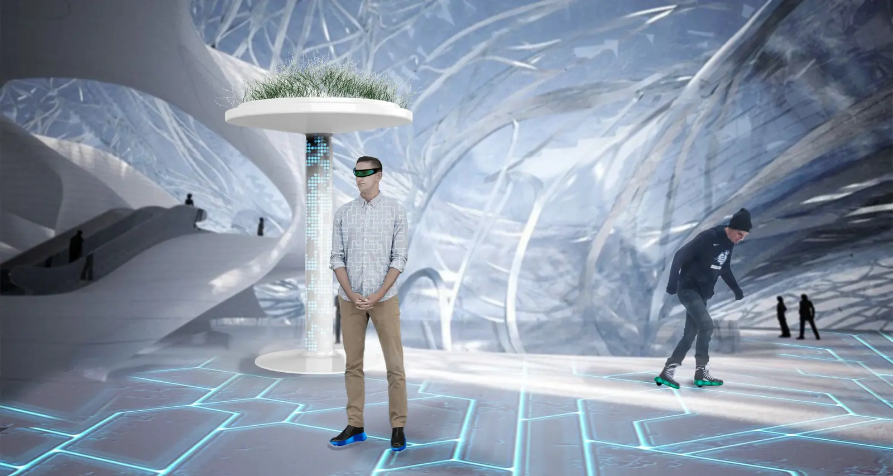
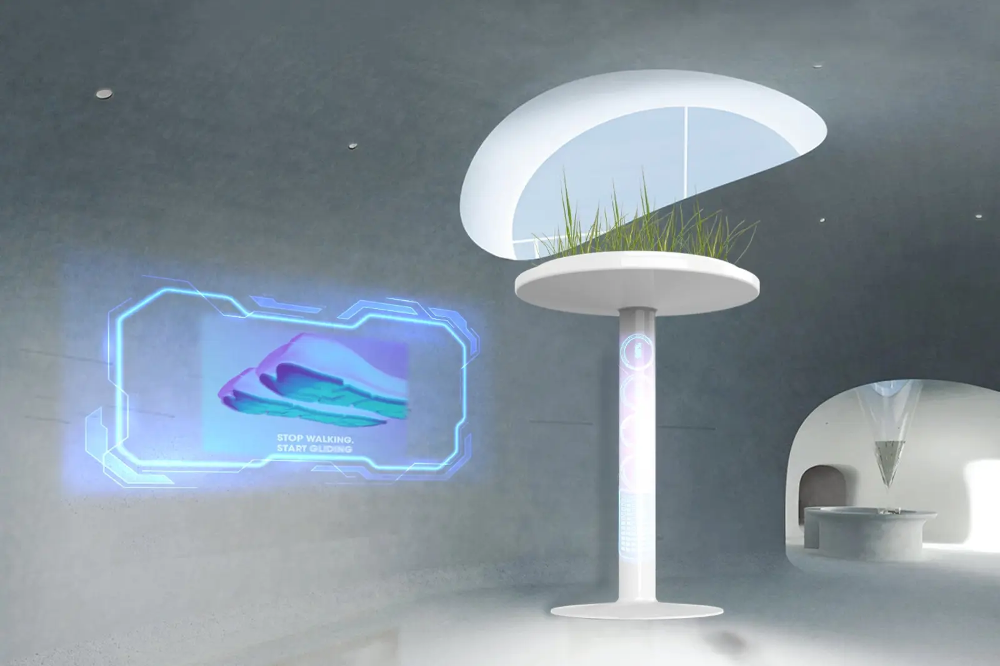
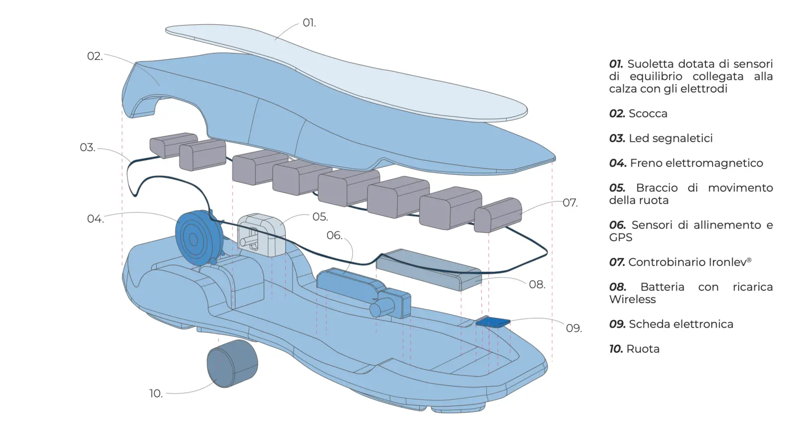
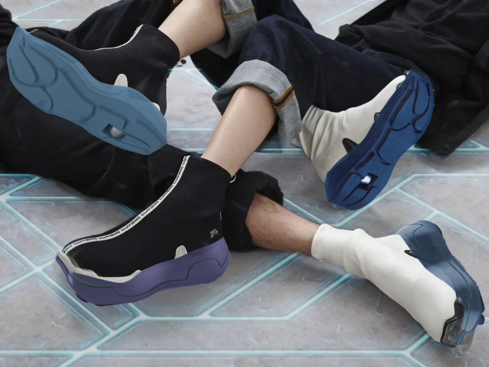

The project began by developing a plausible future scenario based on the long-term consequences of climate change, investigating how environmental transformations could reshape cities, mobility and everyday behaviours.
Rather than designing a single product, Glide was conceived as an integrated mobility ecosystem for the underground city combining infrastructure, digital services and wearable technology.
The service combines an adaptive wearable sole, an intelligent transport infrastructure and an underground magnetic levitation network, enabling users to walk, slide or levitate depending on distance and environmental conditions.
Glide demonstrates how speculative design can be used to explore future challenges and generate tangible design strategies. The project was selected for the exhibition "Motion. Autos, Art, Architecture" curated by Norman Foster at the Guggenheim Museum Bilbao, showcasing innovative visions for the future of mobility.






